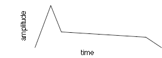

|
|||||||
More Audio Objects
This tutorial introduces some additional audio objects used by many instruments, in particular the Envelope, Volume and Stereo Panning classes.
View / Download source - Instrument class
View / Download source - Instrument class
View / Download source - Composition class
Lets have a closer look.
import jm.audio.io.*; import jm.audio.synth.*; import jm.music.data.Note; import jm.audio.AudioObject; /** * A basic additive synthesis instrument implementation * which implements envelope and volume control * @author Andrew Sorensen */ public final class SineInst extends jm.audio.Instrument{ //---------------------------------------------- // Attributes //---------------------------------------------- /** The points to use in the construction of Envelopes */ private EnvPoint[] pointArray = new EnvPoint[10]; /** The number of channels */ private int channels; /** the sample rate passed to the instrument */ private int sampleRate; //---------------------------------------------- // Constructor //---------------------------------------------- /** * Basic default constructor to set an initial * sampling rate. * @param sampleRate */ public SineInst(int sampleRate){ this(sampleRate, 2); } /** * A constructor to set an initial * sampling rate and number of channels. * @param sampleRate */ public SineInst(int sampleRate, int channels){ this.sampleRate = sampleRate; this.channels = channels; EnvPoint[] tempArray = { new EnvPoint((float)0.0, (float)0.0), new EnvPoint((float)0.15, (float)1.0), new EnvPoint((float)0.3, (float)0.4), new EnvPoint((float)0.9, (float)0.3), new EnvPoint((float)1.0, (float)0.0) }; pointArray = tempArray; } //---------------------------------------------- // Methods //---------------------------------------------- /** * Initialisation method used to build the objects that * this instrument will use */ public void createChain(){ WaveTable wt = new WaveTable(this, this.sampleRate, Oscillator.getSineWave(this.sampleRate), channels); Envelope env = new Envelope(wt, pointArray); Volume vol = new Volume(env,(float)1.0); StereoPan span = new StereoPan(vol); SampleOut sout = new SampleOut( span); } } |
The SineInst class (above) follows the , buy now familiar, pattern
of having a simple constructor and createChain() method.
It does a few things differently from the SimpleSineInst class,
it declares the envelope points within the constructor,
and adds a Volume and StereoPan audio objects to the chain. We'll examine
in some detail.
Envelope class
Within the chain the Envelope class looks much simpler in this instrument
because the detail of creating envelope points is in the constructor.
The Envelope audio instrument class take the previous audio instrument
and an array of points.
Making up the array of points can be done anywhere - the constructor
is an obvious place, and also allows for several constructors
in the one instrument class each of which have different envelopes.
Break Point Envelope

The envelope shown above is descibed by the java code below.
EnvPoint[] tempArray = {
new EnvPoint((float)0.0, (float)0.0),
new EnvPoint((float)0.15, (float)1.0),
new EnvPoint((float)0.3, (float)0.4),
new EnvPoint((float)0.9, (float)0.3),
new EnvPoint((float)1.0, (float)0.0)
};
The envelope points are an array of EnvPoint objects.
The array can be any size, so you can have any number of points and
so as complicated an envelope as you like.
The EnvPoint class constructor takes two floating point values, the
first is the time (relative to the notes start time) for the point and
the second
float is the volume of the note at the time (zero is silent and 1.0
is maximum value).
It is conventional for notes to start at time 0.0 at amplitude 0.0 and
the end at time 1.0 at volume 0.0.
This prevents audible clicks at either end of the note. In between do
what you like, simple make sure that points don't go backwards in time
or negative in amplitude : -)
Volume class
In the jMusic data structure each note has a dynamic value between
1 and 127.
When an instrument has a Volume object in the chain it will respond
to a note's dynamic.
Volume vol = new Volume(env,(float)1.0);
This code shows the Volume constructor taking a second argument of
1.0, this means that the note's dynamic value will be scaled by that
value.
This can be useful if an instruments synthesis process consistently
produces a low or extreme level, for example.
In most cases the scaling factor will be 1.0, and so a simplified constructor can be used.
Volume vol = new Volume(env);
StereoPan class
The stereo pan object changes the volume of each stream of a mult-ichannel
audio stream to make the sound appear to sit anywhere across the stereo
image. The pan position is an note attribute and so is unique to each
note.
A pan value of 0.0 position the sound extreme left (maximum volume in
the left channel and no volume in the right), a value of 1.0 position
the sound
extreme right (zero volume in the left channel and maximum volume in
the right), and a value of 0.5 positions the sound in the centre
(equal volume in the left and right channels).
StereoPan span = new StereoPan(vol); The stereo pan object constructor takes only the previous audio object in the chain as an argument.
Example Composition
The example composition plays with the notion of musically forwards and backwards, up, down, left and right.
Forwards and backwards is represented by a melody that plays through,
then plays in reverse order (retrograde).
The instrument used to play the retrograde has an envelope that starts
slowly and ends abruptly, which sounds like a percussive sound played
backwards.
Up and Down is represented by changes in volume. The piece starts softly
and gets loudest in the middle then fades out again.
This is achieved in the score by setting each notes' dynamic value appropriately.
left and right is represented by the panning position.
the piece starts with panning set to 0.0 (extreme left) then move to
the right in the middle of the piece,
then pans back to the left in the second half.
import jm.JMC; import jm.music.data.*; import jm.music.tools.*; import jm.audio.*; import jm.util.*; /** * @author Andrew R. Brown */ public final class BackwardsEnv implements JMC{ public static void main(String[] args){ Score score = new Score("JMDemo - Audio test"); Part part = new Part("wave", 0); Phrase phr = new Phrase(0.0); int sampleRate = 44100; Instrument inst = new SquareInst(sampleRate); Instrument inst2 = new SquareBackwardsInst(sampleRate); Instrument[] ensemble = {inst, inst2}; for(int i = 0; i < 12; i++ ) { Note note = new Note((int)(Math.random() * 12) + 60, 0.25, (int)(126 / 12 * i + 1)); note.setPan(1.0 / 12.0 * i); phr.addNote(note); } part.addPhrase(phr); score.addPart(part); Phrase phr2 = phr.copy(); phr2.setStartTime(phr.getEndTime()); Mod.retrograde(phr2); Part part2 = new Part("back", 1); part2.addPhrase(phr2); score.addPart(part2); Write.au(score, "BackwardsEnv.au", ensemble); } } |
Try creating your own music that manipulates dynamics and panning..